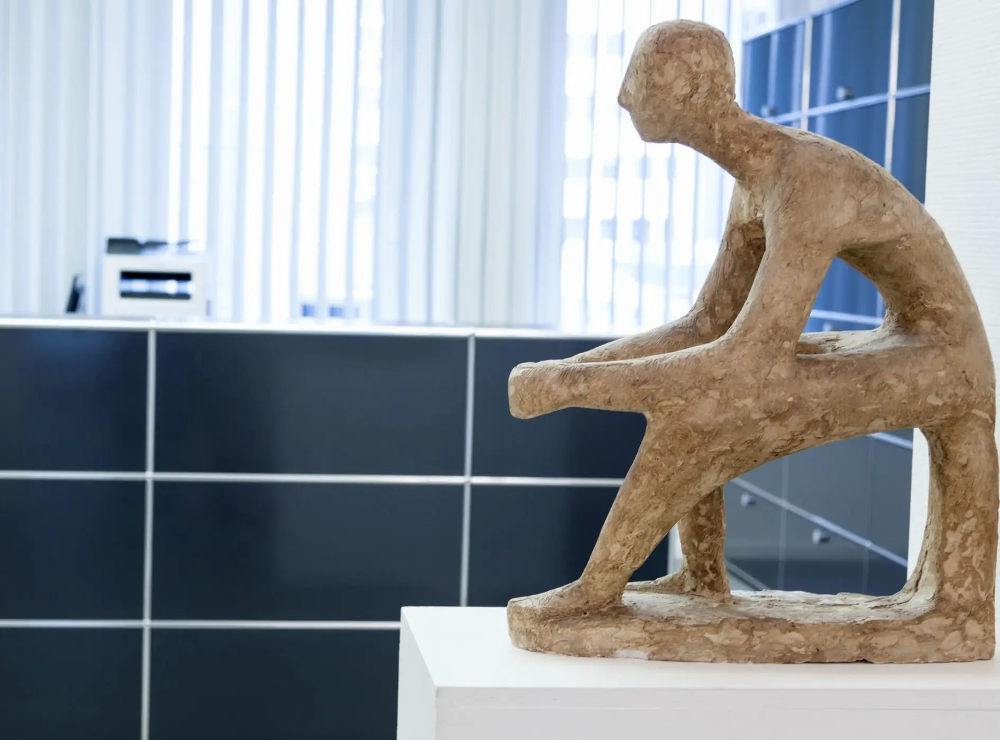
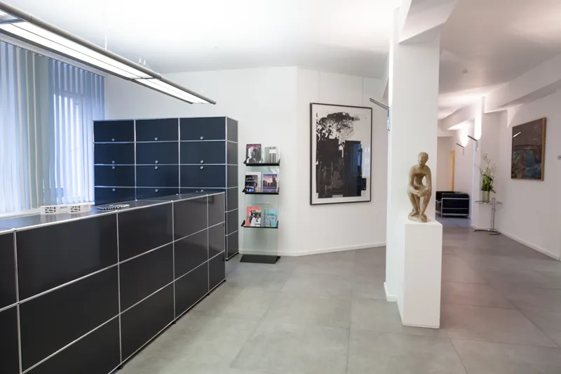
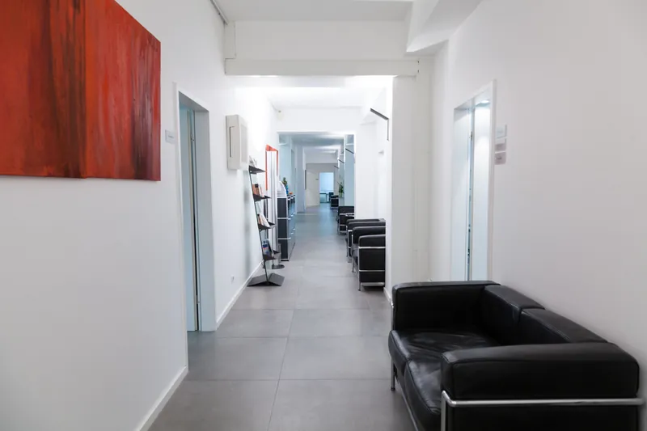
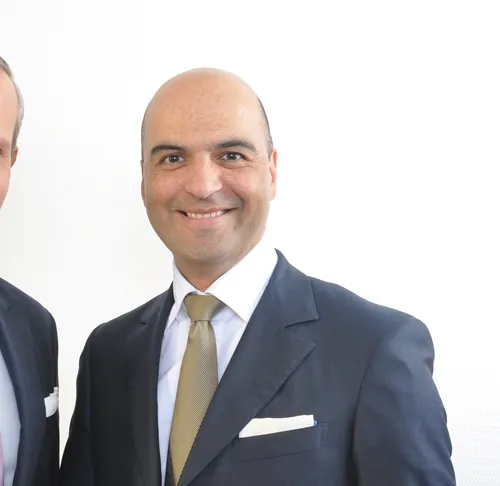
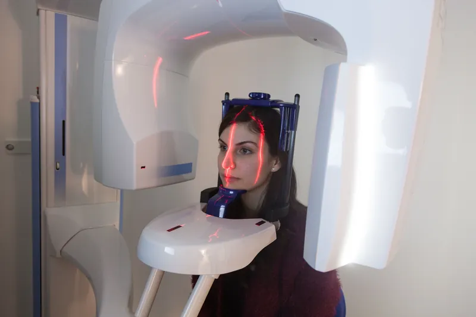
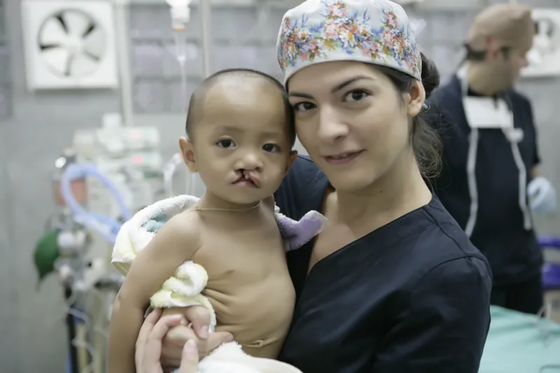
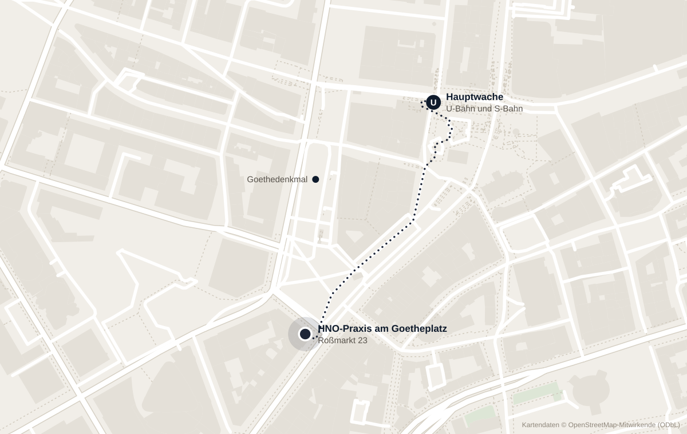

Hals-Nasen-Ohren-Heilkunde in Frankfurt
HNO-Praxis
am Goetheplatz
Dr. med. Christian R. Otterstedde und Dr. med. Barun A. Sarkar, Fachärzte für HNO-Heilkunde. Roßmarkt 23, direkt an der Hauptwache.

Termine
Die Praxis
Qualität ist uns Verpflichtung, Menschlichkeit oberstes Prinzip.
Unsere Ausbildung an der Universitätsklinik Heidelberg verpflichtet uns zu einer präzisen und sicheren Medizin. Die Mitarbeit unseres akademischen Lehrers, Prof. Dr. Hagen Weidauer, ehemals Direktor der Universitäts-HNO-Klinik Heidelberg, unterstreicht dies.
Der Mensch steht im Mittelpunkt. Eine differenzierte und gewissenhafte Aufklärung und ein Einbeziehen des Patienten in die Therapieentscheidung liegen uns am Herzen.


Leistungen
- Allergien und Asthma Präzise Diagnostik im eigenen Allergielabor, Hyposensibilisierung nach aktuellem Standard.
- Schnarchen und Schlafmedizin Endoskopie, Polysomnographie und individuelle Therapie bei Schnarchen und Schlafapnoe.
- Hörsturz, Tinnitus und Schwindel Schnelle Abklärung und zielgerichtete Therapie, auch intratympanal.
- Audiologie und Neurootologie Hochtonaudiometrie bis 18 kHz, BERA, OAE, Videonystagmographie und cVEMP.
- Diagnostik und DVT Endoskopie, Ultraschall und strahlungsarme 3D-Bildgebung direkt in der Praxis.
- Infektiologie Zielsichere Diagnostik von Infekten, CRP-Wert in wenigen Minuten.
- Rhinoplastik Funktionelle und ästhetische Nasenkorrekturen, geplant mit 3D-Gesichtsfoto.
- Operationen Ambulant und stationär, mit 24-Stunden-Erreichbarkeit nach dem Eingriff.
- Labor Molekulare Allergiediagnostik mit ImmunoCAP und immunologische Spezialdiagnostik.
- Phoniatrie und Pädaudiologie Stimm- und Sprachstörungen, Neugeborenen-Screening, kindliche Hörstörungen.
- Eignungsuntersuchungen Tauchtauglichkeit, Stimmuntersuchung, Hörfähigkeit für Piloten und Jäger.
Ärzte
Dr. med. Christian R. Otterstedde
Facharzt für Hals-Nasen-Ohren-Heilkunde. Studium in Münster, St. Louis und Boston, Facharztausbildung an der Universitäts-HNO-Klinik Heidelberg. Schwerpunkte Allergologie, Hörsturz und Tinnitus.
Lebenslauf
Dr. med. Barun A. Sarkar
Facharzt für Hals-Nasen-Ohren-Heilkunde. Studium in Frankfurt, Facharztausbildung an der Universitäts-HNO-Klinik Heidelberg. Vorsitzender des Medical Intervention Team e.V.
LebenslaufPhoniatrie und Pädaudiologie: Dr. med. Roland Teprt. Mehr erfahren
Ausstattung

Digitale Volumentomographie in der Praxis
Mit dem Planmeca ProMax 3D ProFace untersuchen wir Nasennebenhöhlen sowie Mittel- und Innenohr direkt bei uns, mit höherer Bildauflösung und geringerer Strahlung als bei einer herkömmlichen CT. Das integrierte 3D-Gesichtsfoto nutzen wir bei der Planung von Nasenkorrekturen.
Außerdem: starre und flexible Endoskope, Leica-Ohrmikroskope, Ultraschall mit Farbduplex, vollständige Hör- und Gleichgewichtsdiagnostik und ein eigenes Allergielabor.
Diagnostik und AusstattungEngagement
Medical Intervention Team e.V.
2009 hat Dr. Sarkar den gemeinnützigen Verein mitgegründet. Ärztinnen und Ärzte operieren in Myanmar unentgeltlich Kinder mit Lippen-Kiefer-Gaumenspalten. Mehr als 580 Patienten wurden bisher behandelt.
Mehr über den Verein
Anfahrt
Roßmarkt 23
60311 Frankfurt am Main
Telefon 069 26 49 50 150praxis@hno-docs.de
Sprechzeiten
- Montag bis Freitag
- 8:30 bis 13:00 Uhr
- 14:30 bis 19:00 Uhr
- Samstag und Sonntag
- geschlossen
